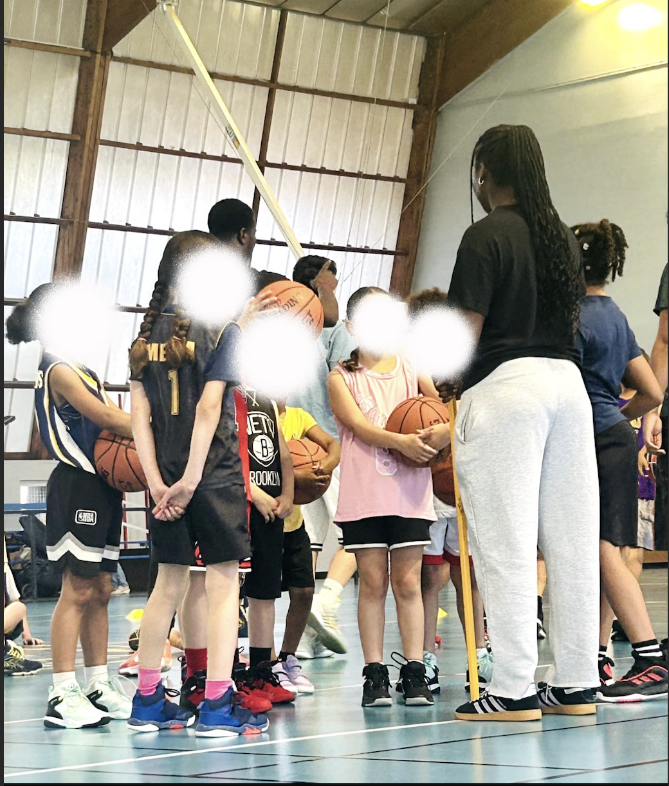
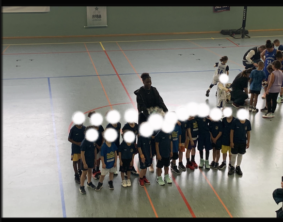
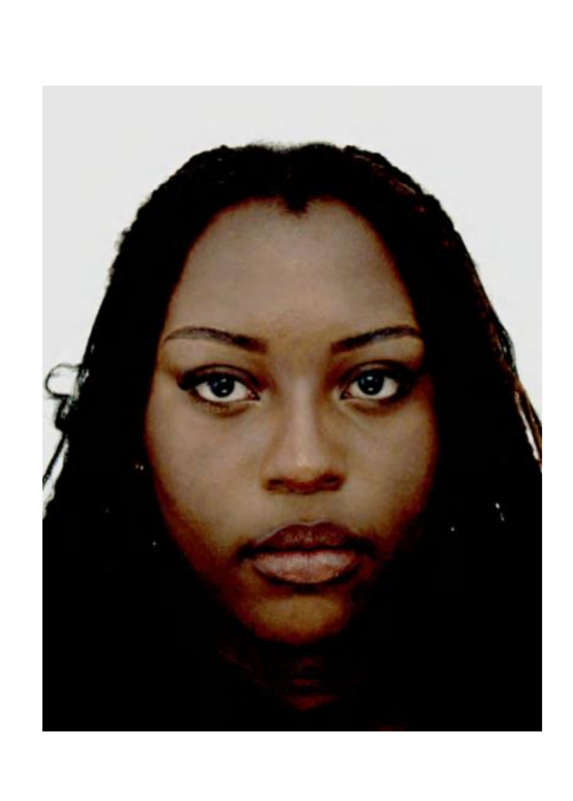

À propos
Bonjour à tous, je m'appelle Bernada Nzibu Bazebimio. En dehors des cours ...


Bonjour à tous, je m'appelle Bernada Nzibu Bazebimio. En dehors des cours ...


Je proviens d'un bac général avec les options Mathématique et AMC.

Programmation & Analyse : Python (Pandas), R, SQL, Microsoft Excel (tableaux croisés dynamiques, formules avancées), nettoyage de données, traitement de fichiers bruts.
Modélisation : modélisation mathématique, clustering.
Bases de données : conception, restructuration, normalisation, requêtage SQL, schémas relationnels.
Statistiques & Data : statistiques descriptives, probabilités, régression linéaire, tests du Chi-deux (χ²), data visualisation, création de tableaux de bord et de reportings visuels sous Tableau Desktop, avec capacité d'adaptation à d'autres outils de data visualisation comme Qlik Sense ou Power BI.
Soft Skills : prise de décision rapide (arbitre), adaptabilité en situation de stress, organisation, communication pédagogique.
Base de données relationnelle : conception et implémentation d'une base de données : restructuration, normalisation et conversion d'un fichier Excel brut en schéma relationnel, automatisation de reportings sous Metabase et Tableau Desktop.
Objectif : rendre les données parfaitement exploitables, cohérentes et performantes.
Modélisation statistique (Santé) : régression sur données réelles : analyse statistique de données hospitalières et développement d'un modèle de régression linéaire basé sur le cancer du sein.
Objectif : prédire le diagnostic de cancer en fonction des caractéristiques cellulaires des patientes.
Data visualisation & Analyse socio-économique : analyse de données, reporting et data visualisation : traitement d'une base de données massive, analyse statistique (tests du χ²) et étude de l'impact du manque de diplôme sur le chômage des jeunes.
Objectif : valider une problématique socio-économique grâce à l'amélioration de la qualité des données, restituer les résultats dans une vidéo professionnelle et un powerpoint.
Immersion Analytique & Données de Santé (Centre Hospitalier) : conception, traitement et analyse d'une base de données de patientes (service pédiatrique / maternité) : nettoyage de fichiers bruts, structuration des informations dans le respect du secret professionnel et automatisation de reportings sous Excel.

Objectif : analyser les flux de consultations, concevoir des tableaux de bord de suivi d'activité dynamiques et mettre en évidence des insights clés pour l'aide à la décision.
+33 6 51 87 25 94
nzibubernada305@gmail.com
linkedin.com/in/bernada-nzibu-bazebimio
canva.link/67wgccgamzz36rh